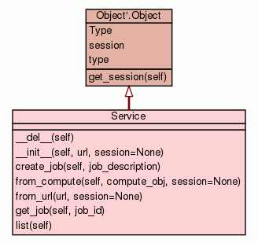

Class JobID
source code

Represents a SAGA job ID (Not part of GFD.90)
The SAGA job.Job ID is usually considered to be an opaque string,
but in general is expected to be formatted as:
'[backend-url]-[native-id]'
(including brackets!), where 'backend-url' is the contact URL for the
job manager (job.Service) who 'owns' the job, and 'native-id' is the
job id as issued and understood by that job manager.
Bliss exposes those components of the job ID in this class, which
allows to create new IDs and to parse / split existing IDs.
Example:
jd = saga.job.Description()
jd.executable = "/bin/date"
jd.arguments = ["-u", "-R"]
js = saga.job.Service("fork://localhost/")
j = js.create_job(jd)
j.run()
print "job id: %s" % j.job_id
|
|
|
|
|
|
|
Inherited from object:
__delattr__,
__format__,
__getattribute__,
__hash__,
__new__,
__reduce__,
__reduce_ex__,
__repr__,
__setattr__,
__sizeof__,
__subclasshook__
|
|
|
native_id
The job ID's native id component
|
|
|
service_url
The job id's service url component
|
|
Inherited from object:
__class__
|
__init__(self,
service_url,
native_id)
(Constructor)
| source code
|
Create a new job id.
- Parameters:
- Overrides:
object.__init__
|
__str__(self)
(Informal representation operator)
| source code
|
String representation.
- Overrides:
object.__str__
|
native_id
The job ID's native id component
- Get Method:
- unreachable.fget(self)
|
service_url
The job id's service url component
- Get Method:
- unreachable.fget(self)
|